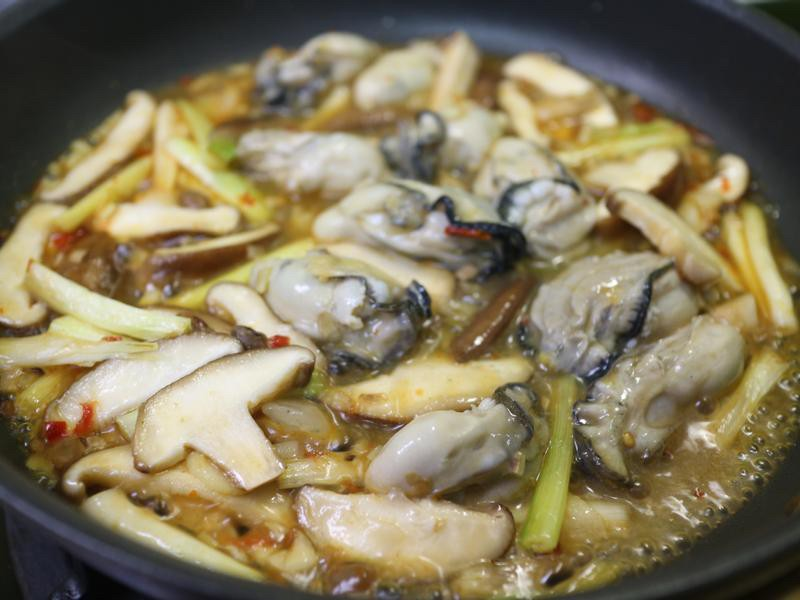
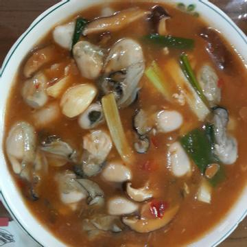
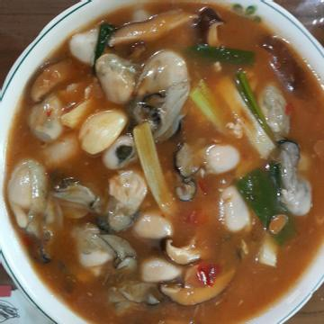
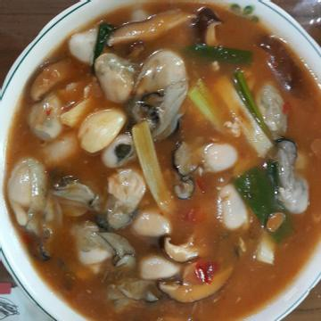
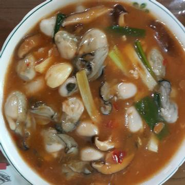
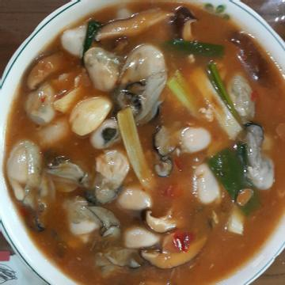

將鍋熱油，爆香薑絲和蒜末，然後丟入蛤蜊和米酒拌炒至蛤蜊開。
醬油沿鍋邊倒入，再加砂糖提味，九層塔也丟入快速拌炒均勻即可關火。如喜歡吃辣的在丟九層塔時可以一併丟入辣椒一起拌炒。
料理新手怕手忙腳亂，可以將醬料米酒、醬油、砂糖先裝碗直接在步驟2一起倒入。
 
鳳梨蝦球介紹 鐵板豆腐介紹 蔥爆鮮蚵介紹 心得
練習 影片 音樂
Your browser does not support the audio element. Your browser does not support the video tag.
 


